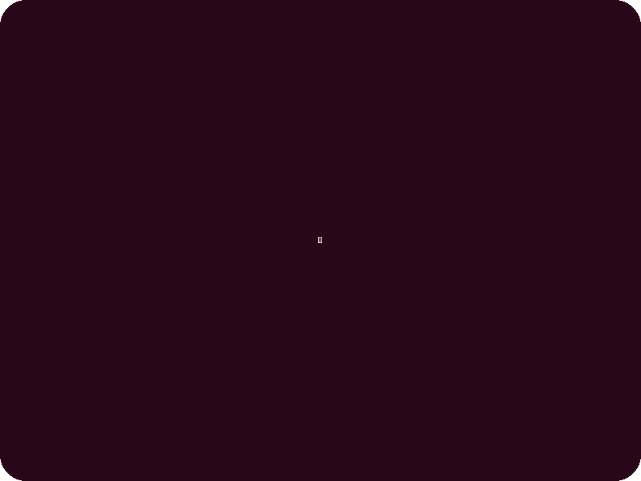

What Brings You In
🩺
☀️
📋 New Case
🗣 Interview
📚 Library
📊 Stats
📖 Reference
🗂 History
⚠️ Why
Difficulty
🌱 Beginner
🔥 Intermediate
⚡ Advanced
🎓 Boards
Clinical focus
🫀 Internal
🦴 MSK
🧠 Mental-Emotional
🌸 Gynecology
🌀 Digestive
🫁 Respiratory
✨ Dermatology
👶 Pediatrics
Custom scenario (optional)
🩺 Generate Patient Case
🎲 Surprise Me
—
Chief Complaint
Interview
⏱ Duration
↕️ Mod. factors
🌙 Sleep
🍽 Digestion
⚡ Energy
💭 Emotions
💧 Thirst
🚽 Elimination
🌡 Temp
👅 T&P
↑
Your Diagnosis
TCM Pattern(s)
LV Qi Stagnation
HT Blood Deficiency
KD Yin Deficiency
SP Qi Deficiency
LV/KD Yin Deficiency
Phlegm-Heat
Blood Stasis
KD Yang Deficiency
Damp-Heat
Wind-Cold Invasion
LV Yang Rising
HT & SP Deficiency
Treatment Principle
Point Prescription
Formula / Herbs
✅ Submit & Get Feedback
Clinical Feedback
—
Pattern Assessment
Treatment Principle
Point Prescription
Formula
What to Study Next
🩺 New Case
Classic TCM cases
Overview
0
cases completed
—
average score
—
best score
0
day streak 🔥
Score by difficulty
Areas to strengthen
Recent cases
Completed cases
なぜ · WHY · なぜ
WHY
this might happen to you..
これはあなたに起こるかもしれない

Every patient you'll ever see has a story.
Every pattern you learn was someone's suffering.
Every point you locate could change someone's life.
This is why you study.